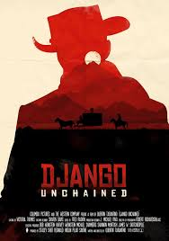
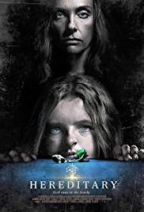
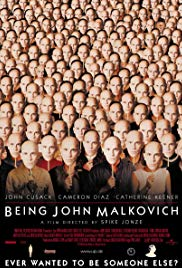
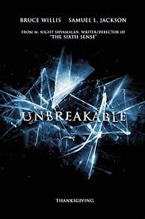
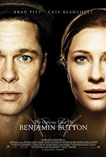
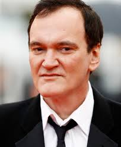
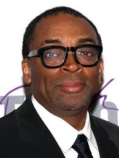

Movies
Amazing Film
There are alot of good Movies but only a few can be considered great.
Poor attempts at comedy or horror seem to be the only Movies that have come
out in recent times but still some directors put alot of love into there works.
Some of my favorite movies would be...
-
Django unchained
 - Heridetary
 - Being John Malkovich
 - Unbreakable
 - The Curious Case Of Benjamin Button

Directors
These are some of the most passoinate and hard woking people you will ever meet
they Create the movies that i love so much.Directors film from thing that
they are influenced by sometimes that is movies.Some examples of great
directors are...
- David Fincher
- George Lucas
- Quentin Tarantino
 - Steven Spielberg
-
Spike lee
